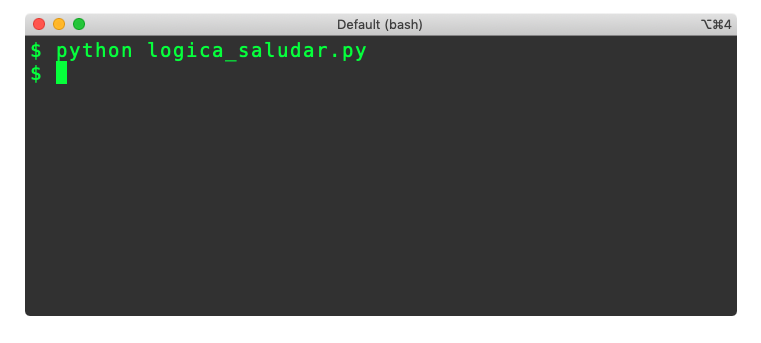
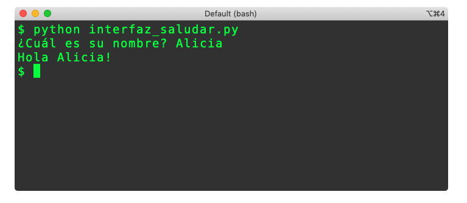

Lógica vs. Interacción#
Versión borrador / preliminar
Este documento es una versión preliminar para uso interno. Si encuentra algún problema o error, o si tiene algún comentario por favor repórtelo a los autores.
Objetivo de la sección
El objetivo de esta sección es presentar recomendaciones metodológicas para manejar la parte de los programas que se encarga de la interacción con los usuarios y la parte que se encarga de hacer los cálculos y otras operaciones.
Usualmente la preocupación más importante cuando se construye un programa es que sea correcto, es decir que sus cálculos y la forma en la que manipule la información que le dé un usuario sea correcta. Por ejemplo, lo más importante del sistema que manipula el dinero en un banco es que lleve correctamente las cuentas: nadie puede perder dinero, deben cobrar lo correcto por cada operación, el descuento de impuestos debe ajustarse a la ley y deben abonar los intereses correctamente calculados.
Además de la corrección, hay otras preocupaciones para tener en cuenta cuando se desarrolla un nuevo programa. Para un usuario, las preocupaciones comunes tienen que ver con la seguridad, el desempeño (qué tan rápido es el sistema) y la usabilidad (qué tan fácil de usar es). Desde el punto de vista de quien desarrolla un sistema, otras preocupaciones importantes son la escalabilidad (qué tan bien funcionará el sistema cuando tenga muchos usuarios o muchos datos), la tolerancia a fallos (cómo se comporta el sistema cuando ocurren ciertos problemas), o la interoperabilidad (qué tan fácil es que el sistema intercambie información con otros sistemas que ya existan) [1].
Sin embargo, la mayor preocupación para quien desarrolla un sistema debería ser la mantenibilidad. Esto quiere decir: qué tan fácil es hacerle un cambio a un sistema (ej. agregarle alguna funcionalidad, corregir algún error, mejorar su apariencia). Cuando se está aprendiendo a programar puede parecer que esta no es una cuestión importante y que lo prioritario son la corrección y el desempeño. La realidad es que una vez se empieza a usar un programa, siempre es necesario hacerle modificaciones, especialmente cuando es muy exitoso. Sólo piense en la cantidad de actualizaciones que tiene que instalar permanentemente en su computador o en su celular: con casi total seguridad usted no está utilizando la primera versión (1.0) de ninguna aplicación [2].
La pregunta natural que debería surgir es entonces: ¿cómo logramos que un programa sea mantenible? Ya en este capítulo discutimos la primera recomendación: documentando el código. Cuando el código está documentado es más fácil que otros programadores o nosotros mismos podamos hacer mejoras o correcciones a nuestros programas.
La segunda recomendación es incluso más importante: estructurando el programa de tal forma que sea fácil de entender. Esto significa que queremos que sea fácil entender cómo está organizado para que cuando haya un error sea fácil encontrar donde se debería corregir, o para que cuando se quiera agregar nuevas funcionalidades no se necesite una gran reestructuración.
Es posible que en este momento sea difícil para usted imaginarse la complejidad de un gran desarrollo porque hasta ahora sólo ha trabajado con pequeños programas. Con el tiempo se dará cuenta que las recomendaciones para organizar sus programas son tremendamente valiosas y que le ahorrarán mucho trabajo en el futuro. Acostúmbrese a estructurar bien sus programas mientras sean pequeños, para que sea natural hacerlo cuando sean grandes.
En esta sección estudiaremos una primera técnica para propiciar la mantenibilidad de los programas. Incidentalmente, para explicar esta técnica tendremos que introducir el concepto de módulo en Python.
Separación de la lógica y la interfaz#
Como hasta el momento hemos construido programas relativamente pequeños, hemos usado un solo archivo para cada uno. A partir de este momento vamos a empezar a separar los programas en dos módulos: uno para manejar la interacción con el usuario (pedirle datos, mostrarle información, etc.) y otro para manejar todo lo que consideramos la lógica del programa, es decir las instrucciones que son realmente el centro conceptual del programa.
Consideremos a modo de ejemplo, un programa que sirva para procesar información de un censo de población. El módulo con la interfaz de este programa servirá para que el usuario seleccione qué información quiere consultar y le mostrará las gráficas y tablas correspondientes. Por otro lado, la lógica del programa se encargará de calcular estadísticas, procesar los archivos y generar (¡no visualizar!) las gráficas que requiera el usuario.
Hay múltiples razones por los cuales esta separación es adecuada para programas como los que vamos a construir en este curso. La primera tiene que ver con el tipo de cosas que se hace en cada parte: mientras que en la interfaz todas las acciones deberían estar orientadas a interactuar con el usuario, en la lógica del programa hacemos cosas mucho más variadas. Con esto logramos que en cada módulo todo lo que hacemos esté relacionado: en lugar de tener funciones que le pidan información al usuario, hagan cálculos complejos y luego muestren el resultado, podemos tener en un módulo funciones dedicadas a la interacción y en otro módulo funciones dedicadas a hacer los cálculos.
Esta coherencia (o cohesión) termina llevando a programas que son mucho más fáciles de mantener porque dependiendo del tipo de error que se presente sabremos mejor dónde se debe corregir el código. La coherencia también se puede ver en el tipo de funciones que se utilizan: mientras en una interfaz basada en consola encontraremos muchos llamados a las funciones print e input, dentro de la lógica del programa encontraremos llamados muy diferentes que dependerán del problema que estemos resolviendo.
Otra ventaja de utilizar esta separación es que se vuelve más fácil probar la lógica de nuestros programas. Cuando la interfaz se mezcla con la lógica, para probar la corrección de un cálculo es necesario probar también la interfaz. Esto implica teclear datos cada vez y observar los resultados para compararlos con los esperados. Si la interfaz está separada de la lógica, podemos invocar directamente las funciones que hacen los cálculos, usando los mismos argumentos cada vez, es decir sin requerir la interacción con el usuario.
Otro motivo para utilizar esta separación tiene que ver con la reutilización. Veremos más adelante que las interfaces de muchos programas son muy similares y que hay mucho código que fácilmente se puede adaptar para utilizar en un nuevo programa. Si la interfaz estuviera mezclada con la lógica, esta reutilización sería mucho más difícil.
Implementación de módulos separados#
Veamos ahora cómo se implementa en Python la separación entre la interfaz y la lógica de los programas. Para esto, tomaremos el programa ‘saludar.py’ que ya conocemos de una sección anterior:
def saludar(nombre: str)-> str:
return "Hola " + nombre + "!"
nombre = input("¿Cuál es su nombre? ")
saludo = saludar(nombre)
print(saludo)
Empezaremos primero con la creación del archivo con la lógica, al cual llamaremos ‘logica_saludar.py’.
# Esto está en el archivo logica_saludar.py
def saludar(nombre: str)-> str:
return "Hola " + nombre + "!"
Como se puede ver, en este archivo únicamente dejamos la función que hace los “cálculos” del programa y crea un mensaje para saludar. Aunque el ejemplo es extremadamente sencillo, es importante notar que en este archivo no se está usando ni la función print ni la función input.
Otra cosa importante para analizar es lo que pasaría si decidiéramos ejecutar este módulo usando la siguiente instrucción en la línea de comandos: python logica_saludar.py.

Como se ve en la captura de pantalla, no hay ninguna evidencia en la consola de lo que sucedió y parecería que nada hubiera pasado. En realidad, lo que hizo el intérprete de Python fue lo siguiente:
Abrió el archivo
Leyó la signatura de la función
saludary revisó que fuera sintácticamente correcta.Revisó el cuerpo de la función
saludary revisó que fuera sintácticamente correcto.Como no había errores, agregó la función a la lista de funciones que se podrían invocar.
Terminó la ejecución.
Es decir que, aunque se leyó la definición de la función, no hubo ninguna invocación ni se ejecutó ninguna instrucción.
Pasemos ahora al módulo en el que vamos a implementar la interfaz de la aplicación. El archivo que usaremos se llamará ‘interfaz_saludar.py’ y estará ubicado en la misma carpeta que el archivo ‘logica_saludar.py’. Si los archivos están en carpetas diferentes, no funcionará todo lo que explicaremos a continuación.
# Esto está en el archivo interfaz_saludar.py
import logica_saludar as logica
nombre = input("¿Cuál es su nombre? ")
saludo = logica.saludar(nombre)
print(saludo)
En la primera línea de este archivo encontramos un tipo de instrucción de Python que no habíamos usado hasta el momento:
import logica_saludar as logica
Esta línea la usamos para importar un módulo para que podamos usarlo dentro de otro módulo. En este caso, estamos importando el módulo logica_saludar para que podamos usar las funciones definidas dentro del módulo interfaz_saludar. Adicionalmente, nuestra instrucción también está indicando que queremos hacer referencia al módulo importado usando el alias ‘logica’. Como veremos a continuación esto es muy útil cuando el nombre de un módulo importado es muy largo, o cuando queremos importar módulos diferentes que tienen el mismo nombre.
Las siguientes líneas del programa son similares a las que ya habíamos estudiado excepto por la línea que dice:
saludo = logica.saludar(nombre)
La diferencia en este caso es que hemos usado el prefijo logica. para invocar la función saludar. Lo que esto significa es que se debe invocar la función saludar que está definida en el módulo que se importó con el nombre logica.
Si el módulo lo hubiéramos importado usando la instrucción
import logica_saludar as l
la invocación a la función habría sido
saludo = l.saludar(nombre)
Finalmente, si sólo hubiéramos importado el módulo usando
import logica_saludar
la invocación a la función habría sido
saludo = logica_saludar.saludar(nombre)
Esto muestra que, si no se le da un alias al módulo al importarlo, se debe utilizar el nombre completo del módulo para invocar sus funciones.
Finalmente tenemos la captura de pantalla que muestra lo que pasa cuando se ejecuta el programa ‘interfaz_saludar.py’.

Funciones de la interfaz#
En una sección anterior hablamos de la conveniencia de tener funciones sin parámetros o funciones sin retorno. En esta sección podemos retomar la discusión puesto que es precisamente en el módulo que implementa la interfaz de un programa donde tiene más sentido incluir este tipo de funciones.
Funciones sin parámetros#
Como dijimos antes, una función sin parámetros no tendría sentido dentro de la definición matemática de función. En el caso de Python, una función cuyo resultado no dependiera de ningún valor externo tampoco tendría mucho sentido; sería mucho más eficiente y claro implementarlo como una constante.
Sin embargo, dentro del módulo de la interfaz sí puede ser conveniente tener funciones sin parámetros. Tomemos como ejemplo el siguiente fragmento de código:
import libreria
def calcular_area_cuadrado() -> float:
str_lado = input("Por favor indique el lado del cuadrado: ")
lado = float(str_lado)
area = libreria.calcular_area(lado)
return area
En este programa tenemos una función sin parámetros que retorna un número decimal, pero ese número puede variar con cada ejecución. De hecho, el resultado de esta función depende completamente de algo externo: el valor que el usuario teclee cuando se ejecute la función.
Esta situación es muy frecuente dentro de los módulos que implementan la interfaz y que reciben información del usuario. Desconfíe de una función que no reciba parámetros y se encuentre mezclada con funciones que tengan que ver con la lógica de la aplicación: probablemente sea un error de diseño y sea necesario cambiar la signatura de la función.
Funciones sin retorno#
En el módulo donde se implementa la interfaz también es posible tener funciones que no tengan un retorno. Estas funciones se suelen llamar procedimientos porque no cumplen con la característica básica de una función de producir un resultado.
El siguiente fragmento nos muestra una función de la interfaz que no tiene un retorno:
def mostrar_resultado(resultado: str) -> None:
print("El resultado es:", resultado)
Observe que a diferencia de casi todas las funciones que hemos visto hasta ahora, esta no incluye una instrucción de tipo return. Esto quiere decir que, si alguien invoca a esa función, no va a recibir un resultado. Para expresar esto en la signatura, el tipo de retorno de la función se ha declarado como None. Más adelante veremos que None se utiliza para varias cosas en Python.
El cuerpo de la función sólo tiene un llamado a la función print. Esta función, que sirve para mostrar algún texto en la consola, es la que está produciendo un resultado, aunque no sea un resultado que se pueda utilizar dentro del programa en instrucciones siguientes [3].
Ejercicios#
¿Sólo con base en la signatura y lo que sabe hasta ahora, usted pondría las siguientes funciones en el módulo de la interfaz o en la librería de su programa?
def funcion(param1: int, param2: int) -> intdef funcion() -> intdef funcion(param1: int) -> Nonedef funcion(param1: int) -> int
Más allá de Python#
La primera parte de esta sección introdujo algunos temas relativamente avanzados que tienen que ver con una gran área de trabajo dentro de la informática llamada Ingeniería de Software. La principal preocupación de esta área es cómo hacer para construir de forma eficiente software con calidad, lo cual implica considerar aspectos como la forma de estructurar el software, las metodologías de trabajo en los proyectos de desarrollo, las técnicas para diseñar interfaces que ofrezcan una buena experiencia a los usuarios, y hasta la psicología de los desarrolladores.
Es indudable que la selección de los lenguajes de programación que se usen tiene un impacto en muchos de los otros aspectos que son de interés para la Ingeniería de Software. Por ejemplo, el uso de un lenguaje como Python parece acelerar el desarrollo de programas pequeños, pero complica el mantenimiento de programas grandes debido a factores como el uso de un sistema de tipado dinámico.
Esto no quiere decir que no se pueda usar Python exitosamente para proyectos grandes. Lo que queremos decir es que la selección del lenguaje de programación debe tener en cuenta una gran cantidad de factores que van mucho más allá de cuál es el lenguaje de moda, cuál es el lenguaje que conocemos o cuál es el lenguaje que nos gustaría aprender. Todos los lenguajes tienen ventajas y desventajas que se deben sopesar cuidadosamente, y después de tomar una decisión cualquier proyecto debería introducir instrumentos para mitigar los riesgos o el impacto cuando se materialicen esos riesgos.
Por ejemplo, si se decide usar un lenguaje como Python o JavaScript para un gran proyecto, deberían definirse varias reglas desde el inicio para contrarrestar la dificultad para aplicar operaciones de refactoring [4].
En casi cualquier lenguaje de programación existen mecanismos similares a los módulos para descomponer programas y poder reutilizar bloques. Estos mecanismos también definen espacios de nombres (namespaces). Es decir que agrupan elementos para que los nombres no tengan que ser únicos dentro de todo el programa, y en lugar de eso sean únicos dentro de cada espacio de nombres. En Java y otros lenguajes orientados a objetos los mecanismos básicos de modularización son las clases, aunque también existen otros mecanismos como los paquetes y las librerías empaquetadas.